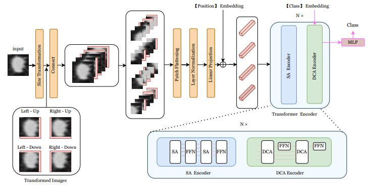

August 2024: Congratulations to Wei Qiu for the paper titled " UTR: A UNet-like transformer for efficient unsupervised medical image registration" was accepted by Image and Vision Computing.
June 2024: Congratulations to Wei QIU， Ning LI， Lianjing XIONG，Yudong PAN and Jianbo CHEN for passing the thesis defense. Best wishes for you.
May 2024: Congratulations to Yudong PAN for the paper titled " Short-length SSVEP data extension by a novel generative adversarial networks based framework" was published by Cognitive Neurodynamics.

August 2023: Congratulations to Pengcheng Xing for the paper titled "A triboelectric tactile sensor with flower-shaped holes for texture recognition" was published by Nano Energy.
June 2023: Congratulations to Min Xia, Li Nie and Yihan Wu, for passing the thesis defense. Best wishes for you.
Spetember 2022: Congratulations to Lianjin Xiong for the paper titled "Low Dose CT Image Denoising Using Efficient Transformer With SimpleGate Mechanism" was accepted by ICONIP2022.

Spetember 2022: Congratulations to Yihan Wu for the paper titled "Schizophrenia detection based on EEG using Recurrent Auto-Encoder framework" was accepted by ICONIP2022.
August 2022: Congratulations to Yudong Pan for the paper titled "An efficient CNN-LSTM Network with spectral normalization and label smoothing technologies" was accepted by Journal of Neural Engineering.

August 2022: Congratulations to Yihan Wu for the paper titled "Simultaneously exploring multi-scale and asymmetric EEG features for emotion recognition" was accepted by Computers in Biology and Medicine.

August 2022: Congratulations to Rui Wang for the paper titled "TransPND: A Transformer based Pulmonary Nodule Diagnosis Method on CT Image" was accepted by PRCV2022.
June 2022: Congratulations to Huan Cai, the first Master student in our laboratory, for passing the thesis defense. Best wishes for you.

May 2022: Congratulations to Prof. Xianjie Pu for the paper titled "Deep Learning Enabled Neck Motion Detection Using a Triboelectric Nanogenerator" was accepted by ACS Nano.